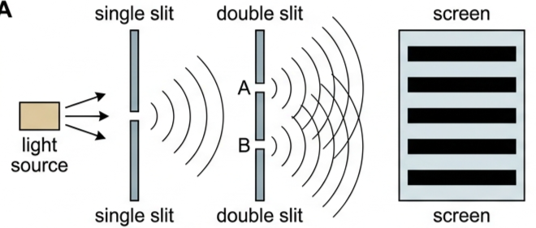
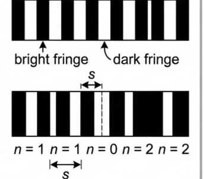
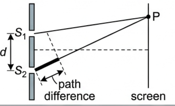
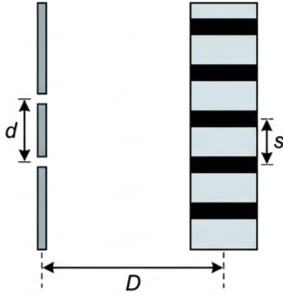
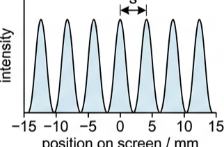
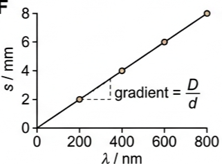
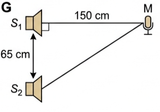
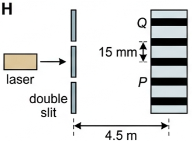

🎯 Hook – one lamp, two slits, stripes on the wall
Shine a laser at a card with two razor-thin slits scratched a fraction of a millimetre apart and the wall does not show two bright lines. It shows a whole row of evenly spaced bright and dark strips, several centimetres wide. Light arriving at a point can cancel light arriving at the same point — something no stream of particles can do.
Young's double-slit experiment produces a diffraction and an interference pattern using either the interference of two coherent wave sources, or a single wave source passing through a double slit.

🔬 The source and the set-up
Lasers are the most common sources used in Young's double slit experiment because the waves must be:
Coherent — have a constant phase difference and frequency.
Monochromatic — have the same wavelength.
In this typical set up:
1. The light source is placed behind the single slit.
2. The light is then diffracted to produce two sources in the double slit at A and B.
3. The light from the double slits is then diffracted, producing a diffraction pattern made up of bright and dark fringes on a screen.
| Symbol | Quantity | Unit |
|---|---|---|
| s | Separation between successive fringes on the screen | m |
| λ | Wavelength of the waves incident on the slits | m |
| D | Distance between the screen and the slits | m |
| d | Separation between the slits | m |
| n | Order of the maximum or minimum | — |
📐 The diffraction pattern
The diffraction pattern from the interference of the two sources can be seen on the screen when it is placed far away.
Constructive interference between light rays forms bright strips, also called fringes, interference fringes or maxima, on the screen.
Destructive interference forms dark strips, also called dark fringes or minima, on the screen.
Each bright fringe is identical and has the same width and intensity.

The interference pattern shows the regions of constructive and destructive interference:
Each bright fringe is a peak of equal maximum intensity.
Each dark fringe is a trough or minimum of zero intensity.
The maxima are formed by the constructive interference of light.
The minima are formed by the destructive interference of light.
📏 Path difference decides everything
When two waves interfere, the resultant wave depends on the path difference between the two waves. The wave from slit \(S_2\) has to travel slightly further than that from \(S_1\) to reach the same point on the screen. This extra distance is the path difference.
The path difference between two waves is determined by the number of wavelengths that cover their difference in length.

Remember the conditions for interference from the previous lesson on double-source interference. For constructive interference (or maxima):
For destructive interference (or minima):
For the maxima in the interference pattern, there is usually more than one produced. \(n\) is the order of the maxima or minima, which represents the position of the maximum away from the central maximum:
\(n = 0\) is the central maximum.
\(n = 1\) represents the first maximum on either side of the central one, \(n = 2\) the next one along, and so on for higher orders.
🧮 The double slit equation
The spacing between the bright or dark fringes in the diffraction pattern formed on the screen can be calculated using the double-slit equation:

The equation shows that the separation between the fringes, \(s\), will increase if:
the wavelength of the incident light increases;
the distance between the screen and the slits increases;
the separation between the slits decreases.
📈 Graphs every examiner uses
| Graph type | Axes (X, Y) | Shape | What to read |
|---|---|---|---|
| Intensity pattern | X: position on screen / mm · Y: intensity | Row of equal-height peaks, equally spaced, falling to zero between them | Fringe separation \(s\) = distance between adjacent peaks; minima have zero intensity |
| \(s\) against \(\lambda\) | X: \(\lambda\) / m · Y: \(s\) / m | Straight line through the origin | Gradient \(= D/d\) |
| \(s\) against \(1/d\) | X: \(1/d\) / m⁻¹ · Y: \(s\) / m | Straight line through the origin | Gradient \(= \lambda D\), so \(\lambda\) follows from a known \(D\) |
| Fringe position \(s_n\) against order \(n\) | X: \(n\) · Y: \(s_n\) / m | Straight line through the origin | Gradient \(= \lambda D/d = s\) |


✍️ Worked example 1 – two coherent sound sources
Two coherent sources of sound waves \(S_1\) and \(S_2\) are situated 65 cm apart in air. The two sources vibrate in phase but have different amplitudes of vibration. A microphone M is situated 150 cm from \(S_1\) along the line normal to \(S_1S_2\). The microphone detects maxima and minima of the intensity of the sound. The wavelength of the sound from \(S_1\) to \(S_2\) is decreased by increasing the frequency.
Determine which orders of maxima are detected at M as the wavelength is increased from 3.5 cm to 12.5 cm.
\(S_2M = \sqrt{150^2 + 65^2}\)
\(= \sqrt{26725} = 163.5\ \text{cm}\)
path difference \(= 163.5 - 150\)
\(= 13.5\ \text{cm}\)
At \(\lambda = 12.5\ \text{cm}\): \(n = 1.08\)
At \(\lambda = 3.5\ \text{cm}\): \(n = 3.85\)

✍️ Worked example 2 – finding the slit separation
A laser is placed in front of a double slit. The laser emits light of frequency 750 THz. The separation of the maxima P and Q observed on the screen is 15 mm. The distance between the double slit and the screen is 4.5 m.
Calculate the separation of the two slits.
\(\lambda = c/f = \dfrac{3.0 \times 10^{8}}{7.5 \times 10^{14}}\)
\(= 4.0 \times 10^{-7}\ \text{m}\)
\(s = 15\ \text{mm} = 1.5 \times 10^{-2}\ \text{m}\), \(D = 4.5\ \text{m}\)
\(= \dfrac{4.0 \times 10^{-7} \times 4.5}{1.5 \times 10^{-2}}\)
\(= \dfrac{1.8 \times 10^{-6}}{1.5 \times 10^{-2}}\)

🌍 Real-world: measuring a wavelength with a ruler
The double-slit equation turns a wavelength of a few hundred nanometres into a fringe spacing of millimetres, which a metre rule can measure. Measuring across ten fringe gaps and dividing by ten reduces the uncertainty, which is why school laser wavelength measurements reach a few per cent.
🚀 HL Extension – angles instead of distances
Away from the small-angle case, the path difference from two slits a distance \(d\) apart is \(d\sin\theta\), so maxima satisfy
With \(\sin\theta \approx \tan\theta = s_n/D\) for \(D \gg d\), this returns \(s_n = n\lambda D/d\), and adjacent orders differ by \(s = \lambda D/d\).
Challenge: for \(d = 0.12\ \text{mm}\) and \(\lambda = 400\ \text{nm}\), at what angle is the third-order maximum? (Answer: \(\sin\theta = 3\lambda/d = 0.010\), so \(\theta = 0.57°\) — small enough that the approximation holds.)
⚠️ Trap corner – common mistakes
| Misconception | Correct view |
|---|---|
| Path difference is the gap between the two rays | It is how much longer one path is than the other — the difference in the distances travelled |
| Two separate lamps of the same colour give fringes | The sources must be coherent (constant phase difference and frequency) and monochromatic — hence a laser |
| Fringes get wider as you move out from the centre | Each bright fringe is identical, with the same width and intensity; \(s\) does not depend on \(n\) |
| \(s = \lambda D/d\) with \(d\) in mm and \(\lambda\) in nm | Convert every length to metres first: 1 mm \(= 10^{-3}\) m, 1 nm \(= 10^{-9}\) m |
| Increasing \(d\) spreads the fringes out | \(s \propto 1/d\) — increasing the slit separation brings the fringes closer together |
Complete the statements:
✓ path difference \(= 163.5 - 150 = 13.5\ \text{cm}\)
✓ maxima require \(n\lambda = 13.5\ \text{cm}\), so \(n = 13.5/\lambda\) gives \(n = 1.08\) at \(\lambda = 12.5\ \text{cm}\) and \(n = 3.85\) at \(\lambda = 3.5\ \text{cm}\)
✓ the whole-number orders in that range are \(n = 2\) and \(n = 3\)
✓ rearranging \(s = \lambda D/d\) gives \(d = \lambda D/s\)
✓ \(d = (4.0\times10^{-7} \times 4.5)/(1.5\times10^{-2}) = 1.2\times10^{-4}\ \text{m}\) (0.12 mm)
(b) Explain why bright and dark fringes appear on the screen. [3 marks] [5 marks]
✓ This light reaches the double slit and is diffracted again at A and B, so both slits act as sources with a constant phase difference (coherent).
(b) ✓ Waves from the two slits travel different distances to a given point, giving a path difference.
✓ Where the path difference is \(n\lambda\) the waves arrive in phase and interfere constructively — a bright fringe (maximum).
✓ Where the path difference is \(\left(n+\tfrac{1}{2}\right)\lambda\) they arrive out of phase and interfere destructively — a dark fringe of zero intensity (minimum).
(a) Sketch a graph of intensity against position on the screen for this pattern. [2 marks]
(b) State the effect on the pattern of each of the following, taken separately: increasing the wavelength; increasing the slit-to-screen distance; increasing the slit separation. [3 marks] [5 marks]
✓ Intensity falls to zero at the minima between adjacent peaks.
(b) ✓ Increasing \(\lambda\) increases \(s\) — fringes further apart.
✓ Increasing \(D\) increases \(s\) — fringes further apart.
✓ Increasing \(d\) decreases \(s\) — fringes closer together (\(s \propto 1/d\)).